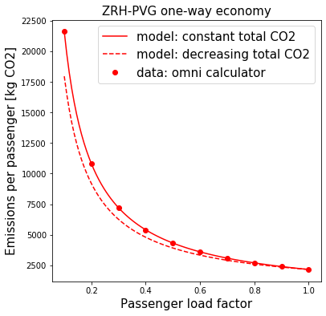

We saw previously that CO2 emissions calculators take into account the passenger load factor by scaling the same total emissions by the occupancy. I see two possible issues with this reasoning.
Firstly, the assumption that the total emissions stays the same isn’t true if we follow the approach of the calculators, and simply vary the number of passengers. The payload (passengers, luggage) accounts for about 25% of the total weight of the plane, fuel accounts for another 25% and the aircraft body accounts for 50%. Reducing the payload by half (50% passenger load factor) therefore reduces total weight by 12.5%. A rule-of-thumb is that each 1% reduction in weight results in a 0.75% reduction in fuel consumption. Therefore, with only 50% passenger load factor the plane would burn 0.75x12.5 = 10% less fuel, not taking into account the weight saving from not needing that 10% fuel. Comparing this 'decreasing passenger load factor means decreasing total emissions' model with the 'total emissions stays the same for all passenger load factors' model, we clearly see that the data points from the emissions calculators follow the constant emissions model.
The second issue, and the elephant in the room here, is cargo. Passenger planes do carry cargo, I read estimates that cargo contributes 5-10% or 15-20% of their revenue. Reducing the passenger load factor on a particular flight allows the airline to increase the cargo. I wasn't able to find any data to analyse yet, but it seems logical that passenger load factor and cargo load factor will be inversely proportional, with airlines always operating close to their optimal weight. Otherwise they're just flying around 50% body and 25% fuel for less than 25% profit making payload. If the cargo is 'responsible' for its fraction of the CO2 emissions in the same way that passengers are, then so long as the total payload weight (passengers plus cargo) remains constant, the CO2 emissions per passenger should be independent of passenger load factor.
Calculators accessed 2019-11.